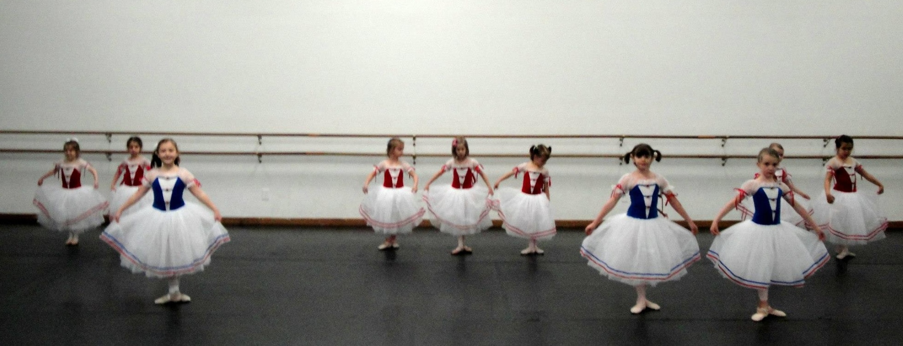
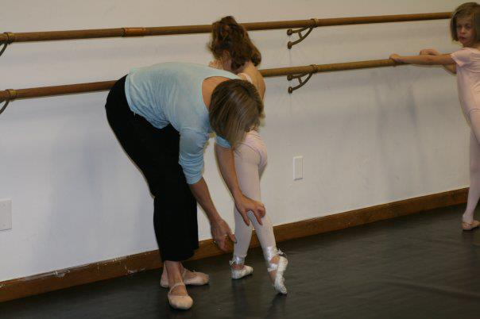
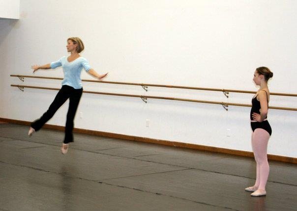
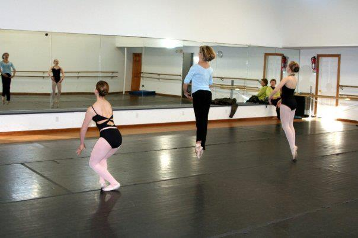
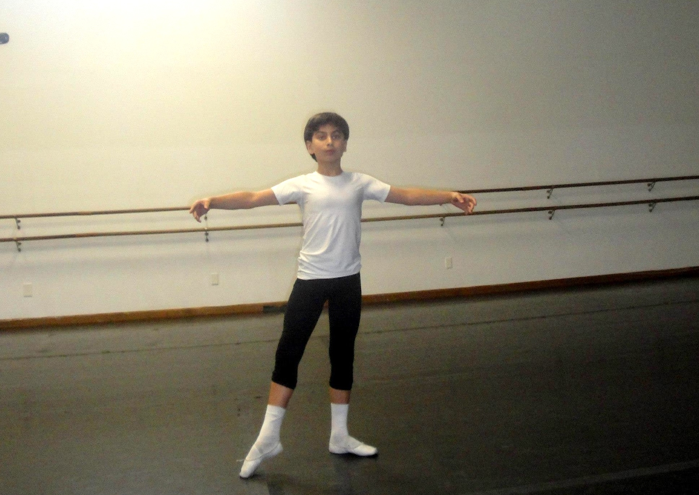
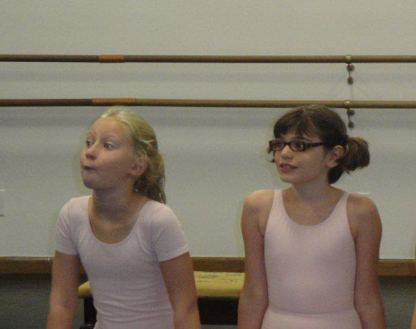

LI Ballet
Academy & Dance

Our academy offers structured classical ballet training for students ages 3 through 21, welcoming all levels from beginner to pre-professional.
Whether a student is seeking enrichment or pursuing a professional path, our program provides strong technical training rooted in classical tradition.
We offer after-school group classes organized by level, providing consistent, progressive training in a focused and supportive environment. Our Students participate in bi-annual performances, gaining valuable stage experience in a professional setting.



Private lessons are available for students seeking individualized attention, whether for technical development, competition coaching, performance preparation, or audition work. We also provide guidance and filming support for audition videos.
Lessons are available both in-person at the studio and remotely via Zoom. Please contact us to arrange a placement class or schedule a private lesson.
For more information or to book a lesson, please email info@liballetacademy.com


Our Summer Intensive programs are held annually for both enrolled students and visiting dancers. Dancers participate in daily classical ballet training designed to strengthen technique, artistry, and musicality. The intensive environment allows students to make significant progress in a short period of time.